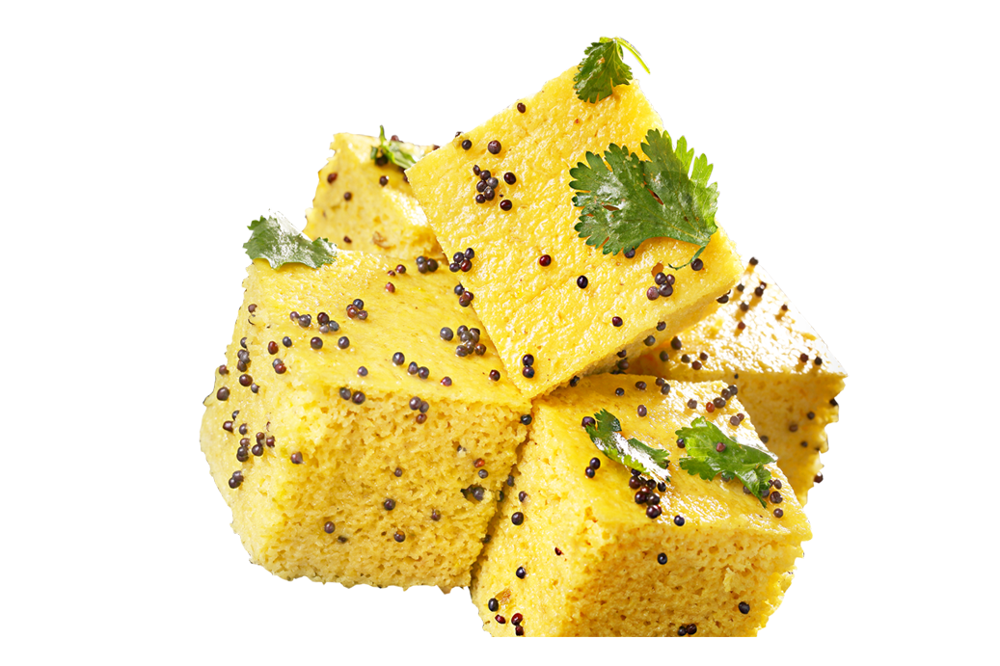

Dhokla
Ingredients:
- 1 1/2 cup besan / gram flour
- 3 tbsp rava / semolina
- 1/2 tsp ginger paste
- 2 chilli (finely chopped)
- 1/4 tsp turmeric
- 1 tsp sugar
- A pinch hing / asafoetida
- 1/2 tsp salt
- 1 tbsp lemon juice
- 1 tbsp oil
- 1 cup water
- 1/2 tsp baking soda Directions:
- In a large mixing bowl sieve 1½ cup besan and 3 tbsp rava.
- Add ½ tsp ginger paste, 2 chilli, ¼ tsp turmeric, 1 tsp sugar, pinch hing, ½ tsp salt, 1 tbsp lemon juice and 1 tbsp oil.
- Prepare a smooth batter adding 1 cup of water or as required.
- Additionally, add a pinch of baking soda.
- Immediately steam the dhokla batter for 20 minutes.
- Further, cut the dhokla and pour tempering.
- Garnish the dhokla with 2 tbsp chopped coriander leaves and 2 tbsp fresh grated coconut.
- finally, serve the khaman dhokla with green chutney and tamarind chutney.

Made with ❤ by
Avanti Shinde
© 2022 RecipeBook.com